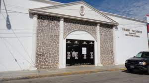
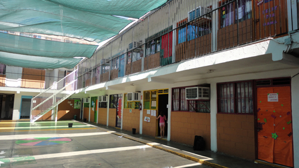
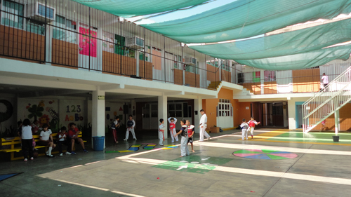
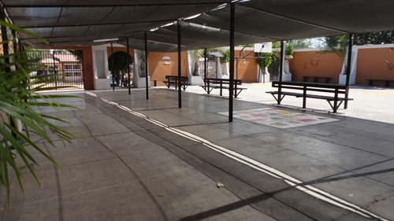
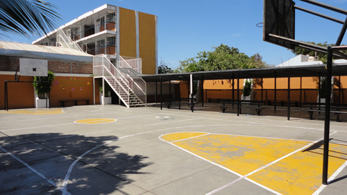
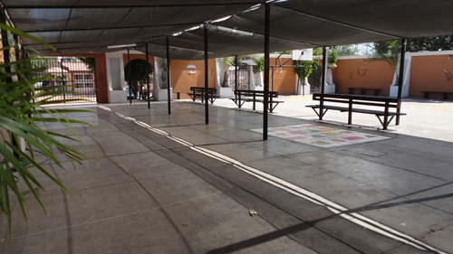
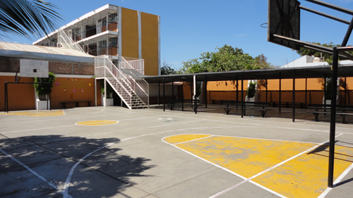
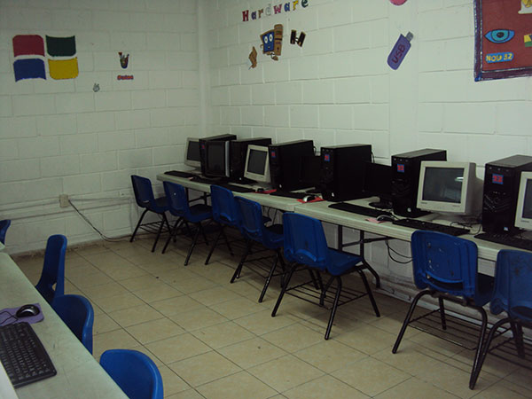

VALLADOLID LOS ARCOS

Aqui puedes encontrar algunas fotografias de nuestra instalacion
   



Dato interesante:en el pasillo(imagen 4)suelen poner muchos carteles/hojas, sobre el bullyng,la contaminacion,etc.Lo mas interesante es que cada hoja/cartel es hecho por un alumno de la escuela.
Nuestros logros:
1-Somos el unico sistema educativo que les enseña a los niños 3 materias complementarias extras:emprendimiento,ajedrez,robotica
2-Tenemos un salon de computacion.
3-Cada año hacemos un campamento donde los niños pueden hacer varias actividades fisicas,el campamento dura 2 dias.Incluye cena y desayuno.Cada grupo estara supervisado por su maestro de grupo.Las actividades seran supervisadas y elaboradas por su maestro de educacion fisica.
4-Tenemos un concurso de deletrar en ingles.
5-Tenemos guarderia para los padres que no puedan llegar a tiempo por sus hijos por una o otra rason.Tiene costo adicional y incluye comida.
6-Cada año se lleva a cabo un campeonato de futbol los niños de un grupo compiten contra los niños de otro grupo.Y las niñas del grupo compiten contra las niñas del grupo con el que competiran las niños.
7-Tambien se lleva a cabo uno de basketball con las mismas dinamicas que el de futbol
8-Tenemos clases de karate,gimnasia,basketball que se llevan a cabo despues de las clases.El de gimnasia se lleva a cabo en el patio de atras, el de basketball en la cancha, y el de karate en el patio de adelante.
9-Tenemos una maestra de educacion artistica y cada año se realiza un bailable.La maestra los ayuda a ensallar una coreografia.Se escogen los niños que participaran no participa todo el grupo solo los mas bien portados.Los padres pueden ir a ver a sus hijos y otros grupos de la escuela hacer el bailable en algun teatro de la ciudad.El ultimo se elaboro en el auditorio MIA.Tambien la coreografia viene con varios trajes que debera llevar cada uno.

10-Cada año se escoge un rey y una reina.Para ganar debes realizar algo para ganar dinero despues se lo dan al director y el que junte mas dinero sera el rey y la reina.Tambien se ponen carteles alrededor de la escuela de los reyes y reinas.Algunas cosas que han hecho los reyes y reinas es montar un circo pequeño con una tarifa de 25 pesos por persona,colocar tienditas de chucherias,etc.
Lo nuevo
Por la pandemia hemos tomado medidas para prevenir el contagio del coronavirus,los grupos los dividimos en dos haciendo que cada grupo cuente con menos de 15 alumnos